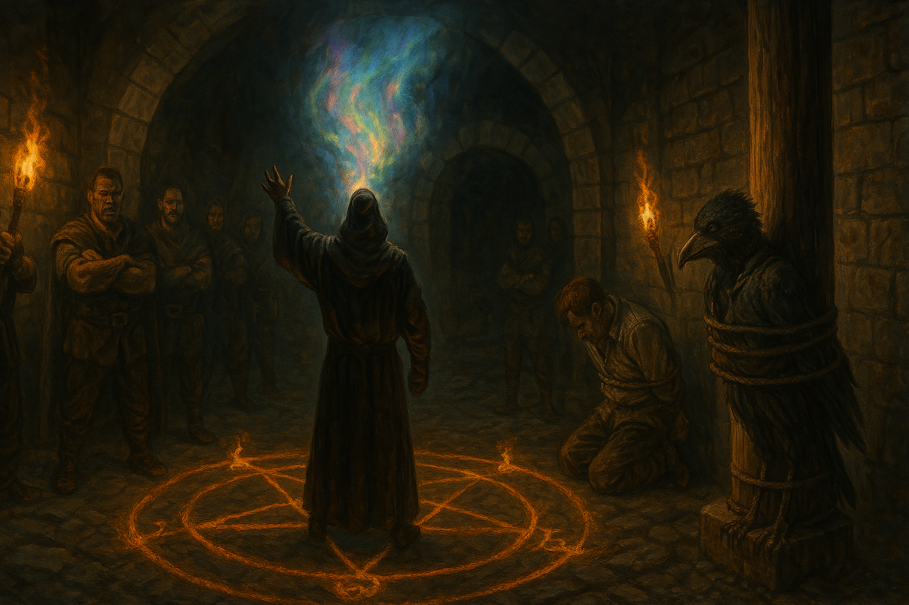

Chapter 2: Town of Villains
Mattington Shattered


Mattington Shattered
15048.11.16
一早醒來，蘇加魯、墜兒和帕拉丁在酒館吃了老闆準備的麵包，作為早餐。同時，在用餐過程中，帕拉丁也向兩人說明了從與台北市議員們相遇後發生的種種冒險故事。然而，在過程中墜兒不斷感覺到有來自酒館其他食客的眼光緊盯著他們。在墜兒提醒後，帕拉丁決定將冒險團到麥克嵩後的旅程之後再說明，而三人也趕緊收拾行囊，離開朗甫頓。
因為帕拉丁取得的地圖放在YHWH身邊，此時他們已經沒有地圖可以參考，只知道目前的目的地，瑟巴諾在朗甫頓的西北方。三人決定先在朗甫頓探索一下，看看有沒有能補給的地方，同時也對這座城鎮有更深入的了解。然而，花了點時間探索，卻發現朗甫頓只是個小鎮，除了酒館和旅店外，基本上沒有什麼多大規模的商店。蘇加魯決定折回酒館，向老闆打聽關於瑟巴諾的消息，以判斷這趟旅程需要走多久。
回到酒館，蘇加魯成功套到話，得知往瑟巴諾其實並不遠，大約只要步行兩三個小時就能到。然而此時墜兒依然感受到緊緊盯住他們的眼光，因此示意蘇加魯該出發了，蘇加魯也同時逃避了酒館老闆好奇詢問他們去瑟巴諾的窘況。
朝著西北放走，蘇加魯發現方向不難定位，同時墜兒也殿後，幫忙檢查是否有來路不明的跟蹤者。路上帕拉丁也和兩人補上台北市議員到麥克嵩後的冒險旅程。
兩個多小時後，三人來到了一個荒廢，甚至可以說是蓋到一半的破舊城門，上面用潦草的字跡寫著「瑟巴諾」，墜兒甚至發現在字底下還有被劃掉的一行字，仔細宜看，寫著「惡棍之都」，彷彿提醒著他們來到瑟巴諾最好小心一點。
踏入瑟巴諾，路上沒有什麼行人，卻處處讓人感到警戒。在朗甫頓時，酒館老闆曾和蘇加魯說沒什麼人去瑟巴諾，從瑟巴諾來朗甫頓的人還比較多。三人花了點時間，想了解一下到底這座城鎮有多不堪。一段時間後，墜兒被緊盯的不安感達到最高點，他一回頭，看見一個鳥形生物直直站在他們身後，似乎也沒有要躲藏的意思。發現那生物不是人類後，墜兒馬上放下戒心，決定去認識一下。
鳥形生物將斗篷從頭上放下，露出他身黑色的巨大嘴喙，以及如烏鴉般的頭。經過簡單對談後，他們得知名為圖伊特的他，是月神教的信徒，因為過去師父與月先生的認識，他被月先生通知，請求前來協助傳說中的帕拉丁爵士。圖伊特也拿出了掛在脖子上的月神教墜飾，亮麗而潔白。此時，帕拉丁感受到前一日月先生曾遞給他們的石頭，便從背包中取出，發現他正在共鳴而震動。圖伊特看了一眼，表示認同。雖然得知了不少信息，他們卻發現，除了墜兒能聽懂圖伊特完整的發言外，蘇加魯和帕拉丁僅能聽懂極少部分的關鍵字，無法順利搭成一句話。在圖伊特的說明下，他拿出自己部族流傳下的書籍給他們參考，並解釋自己的部族因為惹怒神明，而被下了詛咒，沒了翅膀，說話也只能藉由模仿，像鸚鵡一般，支離破碎。
說著，眾人肚子都餓了，圖伊特提議可以去找個酒館，墜兒和蘇加魯卻拿出了今早還沒吃完的麵包，走在路上便啃食了起來，但是他們的雙眼卻沒有停下尋找酒館的任務。瑟巴諾的街道冷清，各種店家看起來不是被破壞、歇業已久，就是看起來十分古怪。在墜兒和蘇加魯直覺的判斷下，他們走進了路邊一間店。店外沒有任何顯眼的招牌（當然也沒有寫著酒館），窗戶甚至被封住，但是從門外，可以聽見裡頭嘈雜的聲響，因此蘇加魯肯定裡面是可以進去的。
走入店內，四人發現店內空間十分擁擠，服務生忙碌不已，無暇接應他們，而除了兩張桌椅外基本上都被坐滿了。四人好不容易擠了進去，坐在一個空桌旁，不久後，便有一名店員來到桌邊為他們點餐。然而，這人的身影卻讓帕拉丁想起在麥克嵩時見過的一個人：日出酒館的前老闆喬納森。帕拉丁示意請「喬納森」再給他們一點時間考慮要吃什麼。打發走他之後，帕拉丁向夥伴們說起他的發現，並詢問他們的建議。圖伊特發表了他的想法，但是在墜兒耳中，聽到的是要拿刀子將喬納森殺了；在帕拉丁耳中，聽到的卻是不要衝動，先冷靜觀察看看；蘇加魯則是整個有聽沒有懂。發現了三人的資訊不對等後，圖伊特決定握緊胸前的吊飾，並透過心靈感應向蘇加魯以及墜兒表示，他是希望先不要衝動，嘗試套套看話，再決定要怎麼做。
隨著喬納森的再次到來，帕拉丁向喬納森詢問他是否認識法蘭奇？喬納森露出狐疑的表情。帕拉丁向他表示抱歉，他長得很像過去他在麥克嵩認識的一個酒店老闆喬納森。「喬納森」表示那是他的弟弟，他們很久沒聯絡了，而他的名字叫喬納斯。四人點了餐點後，變嘗試觀察附近其他食客的行為。出乎他們意料之外，大多數的客人其實都沒有在吃東西，而是在桌子邊緊緊圍著，小聲地討論，蘇加魯似乎聽到了不少和幫派有關的話題，出乎他的意料之外，卻沒有任何和宗教有關的事討論。不久後，喬納斯將大家的餐點遞上。帕拉丁意識到自己的餐盤底下似乎不太平穩，拿起餐盤，竟然有張紙墊在下面。帕拉丁擔心周圍有其他人偷看，想要到店內的廁所偷看紙條，卻發現要鑽到廁所得度過重重難關，不太可行，於是將紙條先塞到自己的鞋底下。四人趕緊吃完，便由墜兒帶頭，準備離開。
走到店門口，墜兒發現店門被一名壯漢擋住了。在墜兒準備向他借過時，壯漢卻一拳揍向墜兒的臉，一場酒館鬥毆於是拉開序幕。四人發現周圍被六名惡漢包圍，在四人分別發威之下，六名惡漢全數倒下，店內的嘈雜聲嘎然而止。看見周圍沒有其他威脅，帕拉丁自在地將鞋底的紙條取了出來，發現上面寫著小小的「救我」。
隨著蘇加魯的目光，四人發現此刻喬納斯正在吧檯內，被一名壯漢押向吧檯深處的門內。蘇加魯和墜兒朝著吧檯衝去，帕拉丁和圖伊特則朝著壯漢攻擊，壯漢承受住攻擊，將喬納斯押入門內後便將門關上。蘇加魯見狀想衝上前去，卻被吧檯旁的一名客人壓住肩膀，勸他不要涉入過深，卻被蘇加魯掙脫開來。蘇加魯靠著蠻力將門破壞後，四人變踏入陰暗的空間內，裡頭有不少木箱，卻不見人影。簡單調查後，四人發現後面還有扇門，打開發現通往外面的街道。
蘇加魯踏入街道，看見門外一名靠在牆邊的年輕女子，似乎正在想著什麼事，便問他是否有看見任何人從這裡出來。女子表示有看到兩個人出來，朝著右手邊的方向跑去了。四人看見右方遠處壯漢與喬納斯的身影，趕緊跑了過去，同時，帕拉丁也邀請這名女子一同加入追趕。
壯漢與喬納斯在其中一條街口向右轉，沒入了巷弄中。蘇加魯花了點時間趕到，卻發現附近有好多條類似的巷弄。在圖伊特的觀察下，發現血跡似乎是停在了第二條巷子。向巷子內看去，裡頭左右兩側各有五扇門，深處則是死巷。判斷不出到底兩人躲進了哪扇門，女子利用自己的一隻老鼠進行探索，最終認定左手邊的第五間最為可疑。蘇加魯走向那扇門，發現門不用破壞就能打開。門內是黑暗的，除了簡單的桌椅外，沒有其他家具，然而左右兩側都各有一扇門。蘇加魯朝左邊的門走去，發現打不開，女子利用老鼠，發現左邊的門內有很多櫃子，上面放了他沒見過的木盒子，但是沒有人影。帕拉丁和圖伊特朝右邊的門嘗試以長劍攻擊來擊開這扇門，卻發現徒勞無功。女子再次利用老鼠探索，發現裡面有兩個人影，似乎就是他們在尋找的目標。女子從行囊中掏出一些器具，成功將右手邊的門開了鎖，卻發現裡頭只剩下倒在牆角的喬納斯，手腳被綑綁，口部也被綁住，而他頭頂的窗戶是開的。
簡單檢查了一下喬納斯，發現他生命依然穩定後，蘇加魯、女子、墜兒和圖伊特決定趕去追查逃跑壯漢的蹤跡，於是從房子門口跑了出去。蘇加魯看見他已從巷弄外逃出，在跑到主要幹道上後，他從遠處射了兩發手弩，其中一發命中了壯漢的大腿，逼得他一跛一跛的逃亡。四人追了上去，跟著血跡，跑回了酒館的後門。蘇加魯和墜兒決定繞回前門，兩邊可以前後包抄。
女子和圖伊特從後門進入，圖伊特發現這裡的木箱和剛才看見的排列方式似乎有異動，告知女子後，便想做個簡單調查，女子則趕緊跑回酒館用餐區，留下圖伊特獨自調查。一個瞬間，圖伊特發現自己被蓋布袋了，他努力掙扎，並做出反擊，卻沒能阻止蓋他布袋的那個人。空氣逐漸稀薄，他被拳頭重擊，陷入昏迷的前一刻，聽見了那人說著：「會說話又會魔法的鳥，看來可以賣不少錢呢。」
在五人將喬納斯拖出門外後，帕拉丁獨自留在原處守護昏迷的喬納斯。一段時間後，喬納斯逐漸清醒，便發出了悶住的聲響。帕拉丁發現自己忘了將喬納斯嘴上的繩子解開，感到十分抱歉，而喬納斯則訕笑著帕拉丁竟然沒認出他便是喬納森。喬納森也請求帕拉丁為他解開綑綁在手腳上的繩索。兩人討論著接下來該去哪裡，帕拉丁表示自己要繼續待在這裡，等待夥伴的歸來，喬納森則表示要趕快躲起來，不然被發現就完了。他也建議可以先去他的住處，但是自己要帕拉丁也一起過去，以免自己去了遇害沒人能救。在兩人討論的過程中，巷口傳來腳步聲，三五名樣貌兇惡的惡漢朝著他們走來。情急之下，喬納森趕緊跑回剛才逃出來的房子內，帕拉丁也趕緊跟上。將門鎖上後，兩人逃到剛才喬納森被綑綁的小房間內，試圖從剛剛發現的窗外跳出去。門外傳來大力的敲打聲，在喬納森趕緊搬了些椅子到小房間後，他便爬到了窗口，跳了下去。帕拉丁隨後跟上，卻發現窗戶朝向的位置竟然是房屋門口的左手邊，喬納森竟然直接跳到了惡漢們的身邊而被制伏了。情急之下，帕拉丁也跳了下去，想趕緊逃走，卻跌了個大跤。他的眼前，出現了幾個人影，將上頭的光線都遮蓋住了……。
酒館內，墜兒和蘇加魯從正門走入，發現不久前鬥毆的屍體都不見了。雖然感到好奇，但兩人決定先以被蘇加魯射中大腿的壯漢開始尋找。墜兒沒有看見相似的人影，蘇加魯卻像個瘋子般逐桌逡巡，將身子壓在各張桌子上，緊盯著其他客人。一名店員見狀，拍了拍蘇加魯的臉頰，想將他趕走，誰知蘇加魯狂怒之下，將店員直接擊暈。蘇加魯想將這名店員的脊椎打斷，以免他未來找他們麻煩，從後門出現，剛才與他們一同巡查的女子卻阻止了他，自己搶先將店員殺死，並作起了法，將這明剛死的店員直接復甦，並問起了話，他們也得知店員名叫傑克，他是自己的老大，以及要夠厲害，才有辦法在瑟巴諾生存。
在帕拉丁跌到地上後，他趕緊閉上雙眼，假裝自己摔暈了。沒多久，他就被捆綁起手腳，幾名惡漢將他與喬納森抬起。走了好一段時間，帕拉丁感受到光線逐漸暗去，偷偷睜開雙眼，惡漢們正朝著地底下前進。帕拉丁假裝咳嗽，想引起惡漢們的恐慌，卻只有一名惡漢用他的手掩住了帕拉丁的口鼻。不久後，陰暗的地底出現了光，帕拉丁和喬納森被帶到了一個地底的小廣場，周圍插了火把，其中一個柱子底似乎還綁了個人。接著，帕拉丁和喬納森便被紛紛綁在一個柱子底部。帕拉丁看見喬納森似乎已經昏了過去。
被綁在另一根柱子底部的是圖伊特。他看見帕拉丁和喬納森兩人被抬了進來也被綁在柱子底部。惡漢們處置好他們後，便走向後方他們的視線範圍外，那裡一片漆黑。圖伊特試著呼喚帕拉丁，但在帕拉丁的耳中卻只是鳥叫聲。然而這「鳥叫聲」卻引起了一名惡漢的注意，他來到了圖伊特面前。圖伊特想藉機詢問大家被綁來這裡的事，卻被惡漢敷衍了過去。不久後，圖伊特和帕拉丁都聽見了左側他們進來的通道傳來了腳步聲……
在酒館內向傑克問過話後，女子、蘇加魯和墜兒突然想起原本一同前來的圖伊特。三人朝著酒館後門的倉庫走去，卻沒有見到他的蹤跡，只有看到地上的茅草似乎有被挪動過的痕跡。三人不知道該如何找到圖伊特，陷入苦思，決定先回去找帕拉丁。
回到了當初帕拉丁與喬納森和大家分別的房子前，蘇加魯發現房子內外都沒有任何人影。墜兒決定利用帕拉丁戴在身上的紫羅蘭勳章進行定位。自我介紹名為華生的女子決定易容成他們看見綁架喬納森的壯漢，以便後續追蹤。跟隨著定位的方向，三人（以及遠遠跟在後頭，化為殭屍的傑克）向著目標方向前進，走入了地底。
來到地底圖伊特、帕拉丁和喬納森被綁住的小廣場，三人看見被綁在柱子底部的三個夥伴，此時帕拉丁已成功將自己身上的繩子鬆脫，並用腰間的短劍將綁在腳上的繩子解開。
假扮成壯漢的華生看向黑暗中的惡漢們，發現他們已圍成一個圓陣，站在中間的壯漢甚至眼神對著他，令他感到不寒而慄。華生試圖讀取壯漢的心思，發現他想著「時間差不多了」，以及「讓我看看你們到底有多厲害」。隨後，他想朝著惡漢們的方向製造魔法黑暗，卻發現自己的師法竟然失敗了，讓他感到萬分恐懼。
同時，蘇加魯前來解救圖伊特和喬納森，兩人與帕拉丁合力將喬納森抬起，準備朝著來的方向逃走。
墜兒看向惡漢的方向，眼神盯著壯漢。接著，他將長劍插在地上，將刻有戰爭神達里崗符號的劍柄捏碎。墜兒將背後長袍的帽子戴上，一邊走向惡漢，一邊將胸前達里崗的骷髏法器捏碎，露出裡頭發出深黑色光澤的寶石。墜兒前方的兩名惡漢移身，為他敞開了道路。墜兒走入了眾人圍著的魔法陣中，轉身面對他的夥伴們，開始以拉索斯語吟唱。在墜兒的正上方，一個裂縫逐漸撕裂，露出無以名狀、難以形容的光亮色彩，將墜兒與此刻站在他身旁的壯漢籠罩，然後在轉刻間暗去。
墜兒消失了。
15048.11.16
Woke up early in the morning, Sugalu, Drayer and Paladin ate the bread prepared by the boss in the tavern for breakfast. At the same time, during the meal, Paladin also explained to the two the various adventure stories that happened after meeting the Taipei City Councilors. However, during the process, Drayer kept feeling the eyes of other diners in the pub staring at them. After being reminded by Drayer, Paladin decided to explain the adventure group's journey to Macksohn later, and the three of them quickly packed their bags and left Lampton.
Because the map obtained by Paladin was placed next to YHWH, they no longer have a map to refer to at this time. They only know the current destination, Sebano is northwest of Lampton. The three decided to explore Lampton first to see if there was any place where they could supply supplies, and at the same time, they also had a deeper understanding of the town. However, after spending some time exploring, I discovered that Lampton is just a small town. Apart from pubs and hotels, there are basically no large-scale shops. Sugalu decided to go back to the tavern and ask the boss about Sebano to determine how long the journey would take.
Back at the tavern, Sugalu successfully got the message and learned that Sebano is actually not far away. It only takes about two or three hours to walk there. However, at this time, Drayer still felt the eyes staring closely at them, so he signaled to Sugalu that it was time to set off. Sugalu also avoided the embarrassment of the tavern owner curiously asking them to go to Sebano.
Letting go towards the northwest, Sugalu found that the direction was not difficult to locate. At the same time, Drayer also stayed behind to help check whether there were any unknown followers. On the road Paladin also caught up with the two Taipei City Council members on their adventure after arriving at Macksohn.
More than two hours later, the three of them came to an abandoned city gate, which could even be said to be half-built. "Sebano" was written in scrawled writing on it. Drayer even found that there was a line of words that had been crossed out under the words. If you look carefully, it read "Town of Villains", as if to remind them to be careful when they come to Sebano.
Stepping into Sebano, there are no pedestrians on the road, but everyone feels alert. When we were in Lampton, the tavern owner told Sugalu that not many people went to Sebano, but there were more people coming from Sebano to Lampton. The three of them spent some time trying to understand just how miserable this town was. After a while, Drayer's uneasiness about being closely watched reached its peak. When he turned around, he saw a bird-like creature standing directly behind them, with no intention of hiding. After discovering that the creature was not human, Drayer immediately dropped his guard and decided to get to know it.
The bird-like creature lowered its cloak from its head, revealing its huge black beak and its crow-like head. After a brief conversation, they learned that the man named Tweeter was a believer in the Moon God Religion. Because of the past acquaintance between Shifu and Mr. Moon, he was notified by Mr. Moon and asked to come and assist the legendary Sir Paladin. Tweeter also took out the Luna Cult pendant hanging around his neck, which was bright and white. At this time, Paladin felt the stone that Mr. Moon had handed them the day before, and took it out of his backpack, finding that he was vibrating in resonance. Tweeter took a look and agreed. Although they learned a lot of information, they found that except for Drayer, which could understand Tweeter's complete speech, Sugalu and Paladin could only understand a very small part of the keywords and could not successfully form a sentence. Under Tweeter's explanation, he took out the books handed down by his tribe for their reference, and explained that his tribe was cursed because it angered the gods. It lost its wings and could only speak through imitation, like a parrot, fragmented.
After saying that, everyone was hungry, Tweeter suggested that they go find a tavern, but Drayer and Sugalu took out the bread that they had not finished eating this morning, and started to eat as they walked on the road, but their eyes did not stop looking for the tavern. The streets of Sebano are deserted, and various shops look either destroyed, closed for a long time, or they look very weird. Following Drayer and Sugalu's intuitive judgment, they walked into a shop on the roadside. There is no conspicuous sign outside the store (of course it doesn't say "Tavern"), and the windows are even sealed, but from outside the door, you can hear the noise inside, so Sugalu is definitely allowed to go inside.
Entering the store, the four of them found that the space was very crowded. The waiters were too busy to attend to them, and except for two tables and chairs, they were basically occupied. The four of them finally squeezed in and sat at an empty table. Not long after, a clerk came to the table to take their order. However, the figure of this man reminded Paladin of a person he had met in Macksohn: Jonathan, the former owner of Sunrise Tavern. Paladin gestured to "Jonathan" to give them some more time to think about what to eat. After sending him away, Paladin told his companions about his discovery and asked for their advice. Tweeter expressed his thoughts, but in Drayer's ears, he heard that he was going to kill Jonathan with a knife; in Paladin's ears, he heard that he should not be impulsive and to observe calmly first; Sugalu did not understand the whole thing. After discovering that the information between the three people was not equal, Tweeter decided to hold the pendant on his chest tightly, and expressed to Sugalu and Drayer through telepathy that he hoped not to be impulsive first, try the condom and then decide what to do.
As Jonathan arrives again, Paladin asks Jonathan if he knows Frankie? Jonathan looked suspicious. Paladin apologized to him, he looked a lot like a hotel owner Jonathan he met in Macksohn in the past. "Jonathan" means that's his brother, they haven't spoken to each other for a long time, and his name is Jonas. After the four ordered their meals, they tried to observe the behavior of other diners nearby. To their surprise, most of the guests were not eating, but gathered around the table and discussed quietly. Sugalu seemed to have heard a lot of gang-related topics, but to his surprise, there was no discussion of anything related to religion. Soon after, Jonas handed everyone their meals. Paladin realized that the bottom of his dinner plate seemed unstable. He picked up the dinner plate and found a piece of paper underneath. Paladin was worried that other people were peeping around, so he wanted to go to the toilet in the store to peek at the note, but found that it was not feasible to get into the toilet through many difficulties, so he stuffed the note under his shoes first. The four of them finished eating quickly, then Drayer took the lead and prepared to leave.
Walking to the door of the store, Drayer found that the door was blocked by a strong man. When Drayer was about to borrow money from him, the strong man punched Drayer in the face, and a tavern brawl broke out. The four people found themselves surrounded by six evil men. Under the four people's respective attacks, all six evil men fell down and the noise in the store suddenly stopped. Seeing that there were no other threats around, Paladin took out the note from the sole of his shoe and found a small "Help me" written on it.
Following the gaze of Sugalu, the four of them discovered that Jonas was in the bar at this moment, being escorted by a strong man to the door deep in the bar. Sugalu and Drayer rushed towards the bar, while Paladin and Tweeter attacked the strong man. The strong man withstood the attack, pushed Jonas into the door and closed the door. Sugalu saw this and wanted to rush forward, but a customer at the bar pressed his shoulders and advised him not to get involved too deeply, but Sugalu broke away. Sugalu After using brute force to destroy the door, the four of them stepped into the dark space. There were many wooden boxes inside, but no one was there. After a brief investigation, the four found that there was a door at the back, and when they opened it, they found the street leading outside.
Sugalu stepped into the street and saw a young woman leaning against the wall outside the door. She seemed to be thinking about something, so she asked him if he had seen anyone come out from here. The woman said she saw two people coming out and running to the right. The four of them saw the figure of the strong man and Jonas in the distance on the right and ran over quickly. At the same time, Paladin also invited the woman to join the chase.
The strong man and Jonas turned right at one of the street intersections and disappeared into the alley. Sugalu took a while to arrive, but found that there were many similar alleys nearby. Under the observation of Tweeter, it was discovered that the blood stain seemed to stop in the second alley. Looking into the alley, there are five doors on the left and right sides, and there is a dead end alley deep inside. Unable to determine which door the two men hid in, the woman used one of her mice to explore, and finally determined that the fifth room on the left was the most suspicious. Sugalu walked towards the door and found that it can be opened without destroying it. The inside of the door is dark, and there is no other furniture except simple tables and chairs. However, there is a door on the left and right sides. Sugalu walked towards the door on the left and found that it could not be opened. The woman used a mouse and found that there were many cabinets in the door on the left, with wooden boxes he had never seen before placed on them, but there was no sign of anyone. Paladin and Tweeter headed towards the door on the right and attempted to open it with long sword attacks, but found it in vain. The woman once again used the mouse to explore and found two figures inside, who seemed to be the target they were looking for. The woman took out some utensils from her bag and successfully unlocked the door on the right, only to find Jonas lying in the corner. His hands and feet were tied, and his mouth was tied up. The window above his head was open.
After briefly checking Jonas and finding that his life was still stable, Sugalu, the woman, Drayer and Tweeter decided to rush to track down the escaped strong man and ran out of the house door. Sugalu saw that he had escaped from the alley. After running to the main road, he fired two hand crossbow shots from a distance, one of which hit the strong man's thigh, forcing him to limp away. The four gave chase, following the trail of blood, and ran back to the back door of the tavern. Sugalu and Drayer decided to go back to the front door so that they could flank them from both sides.
The woman and Tweeter entered through the back door. Tweeter noticed that there seemed to be something strange about the wooden boxes here and the arrangement he had just seen. After informing the woman, he wanted to do a simple investigation. The woman hurriedly ran back to the dining area of the tavern, leaving Tweeter to investigate alone. In a moment, Tweeter found himself covered with a cloth bag. He struggled hard and fought back, but failed to stop the man who covered him with a cloth bag. The air gradually became thinner, and he was hit hard by a fist. The moment before he fell into coma, he heard the man say: "It seems that the bird that can talk and do magic can be sold for a lot of money."
After the five people dragged Jonas out of the door, Paladin stayed alone to guard the unconscious Jonas. After a while, Jonas gradually woke up and made a muffled sound. Paladin found that he had forgotten to untie Jonas's mouth and felt very sorry, while Jonas laughed Paladin and did not even recognize that he was Jonathan. Jonathan also asked Paladin to untie the ropes that bound his hands and feet. The two discussed where to go next. Paladin said that he would continue to stay here and wait for the return of his partner, while Jonathan said that he should hide quickly, otherwise he would be dead if he was discovered. He also suggested that he could go to his residence first, but he wanted Paladin to go with him to avoid being killed and no one could save him. During the discussion between the two, footsteps came from the alley, and three to five vicious-looking men were walking towards them. In desperation, Jonathan hurriedly ran back to the house he had just escaped from, and Paladin quickly followed. After locking the door, the two fled to the small room where Jonathan was tied up just now, and tried to jump out of the window they just found. There was a strong banging sound outside the door. After Jonathan quickly moved some chairs to the small room, he climbed to the window and jumped out. Paladin then followed, only to find that the window was facing to the left of the door of the house. Jonathan actually jumped directly to the villains and was subdued. In desperation, Paladin also jumped down, trying to escape quickly, but fell down. In front of his eyes, several figures appeared, covering up the light above...
In the tavern, Drayer and Sugalu walked in from the front door and found that the corpses from the fight not long ago were gone. Although curious, the two decided to start their search with the strong man shot in the thigh by Sugalu. Drayer didn't see any similar figures, but Sugalu walked around from table to table like a madman, pressing his body on each table and staring at other guests. Upon seeing this, a clerk patted Sugalu's cheek and tried to drive him away. Unexpectedly, Sugalu became so furious that he knocked the clerk unconscious. Sugalu wanted to break the clerk's spine to prevent him from causing trouble to them in the future. He appeared from the back door, but the woman who was patrolling with them stopped him. He killed the clerk first, and used a method to resuscitate the clerk who had just died, and asked questions. They also learned that the clerk's name was Jack, that he was his boss, and that he had to be powerful enough to survive in Sebano.
After Paladin fell to the ground, he quickly closed his eyes and pretended to have fainted. Soon, his hands and feet were tied up, and several villains lifted him and Jonathan up. After walking for a long time, Paladin felt the light gradually dimming and secretly opened his eyes. The villains were heading underground. Paladin pretended to cough, trying to cause panic among the villains, but only one villain covered Paladin's mouth and nose with his hand. Soon after, light appeared in the dark underground. Paladin and Jonathan were taken to a small underground square with torches placed around them. There seemed to be someone tied to the bottom of one of the pillars. Then, Paladin and Jonathan were tied to the bottom of a pillar. Paladin saw that Jonathan seemed to have passed out.
Tied to the bottom of another pillar is Tweeter. He saw Paladin and Jonathan being carried in and tied to the base of the pillar. After the villains dealt with them, they walked to the rear, out of their sight, where it was pitch black. Tweeter tried calling Paladin, but all that came to Paladin's ears was the sound of birds chirping. However, this "bird call" attracted the attention of a villain, who came to Tweeter. Tweeter wanted to take the opportunity to ask everyone about why they were kidnapped here, but the villain ignored him. Soon after, both Tweeter and Paladin heard footsteps coming from the passage on the left where they came in...
After asking Jack in the tavern, the woman, Sugalu and Drayer suddenly remembered Tweeter who had come together. The three of them walked towards the warehouse at the back door of the tavern, but saw no trace of him. They could only see traces of the thatch on the ground that seemed to have been moved. The three of them didn't know how to find Tweeter, so they thought hard and decided to go back to find Paladin first.
Returning to the house where Paladin and Jonathan separated from everyone, Sugalu found that there was no one inside or outside the house. Drayer decided to use the Medal of Violet worn by Paladin for positioning. The woman who introduced herself as Watson decided to disguise herself as the strong man they saw kidnapping Jonathan for follow-up tracking. Following the location, the three of them (and Jack, who followed far behind and turned into a zombie) moved towards the target and walked underground.
Arriving at the small square underground where Tweeter, Paladin and Jonathan were tied, the three saw the three partners tied at the bottom of the pillar. At this time, Paladin had successfully loosened the rope on himself and used the dagger at his waist to untie the rope tied to his feet.
Watson, pretending to be a strong man, looked at the villains in the darkness and found that they had formed a circle. The strong man standing in the middle even looked at him, which made him shudder. Watson tried to read the strong man's mind and found that he was thinking "it's almost time" and "let me see how powerful you are". Later, he wanted to create magical darkness in the direction of the villains, but found that his magic failed, which made him feel extremely scared.
At the same time, Sugalu came to rescue Tweeter and Jonathan. The two worked together with Paladin to lift Jonathan and prepare to escape in the direction they came from.
Drayer looked in the direction of the villain, staring at the strong man. Then, he inserted the long sword into the ground and crushed the hilt engraved with the symbol of the war god Daligan. Drayer put on the hood of the robe on the back, walked towards the evil man, and crushed the skull weapon of Darigang on his chest, revealing the deep black luster of the gem inside. Drayer The two villains in front moved, opening the way for him. Drayer walked into the magic circle surrounded by people, turned to face his companions, and began to chant in the Rathos language. Right above Drayer, a crack gradually tore open, revealing an indescribable and indescribable bright color, shrouding Drayer and the strong man standing next to him, and then darkened in an instant.
Drayer disappeared.